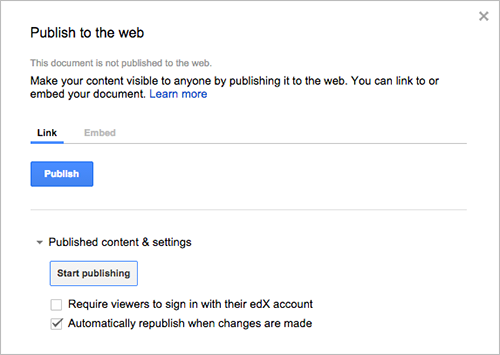
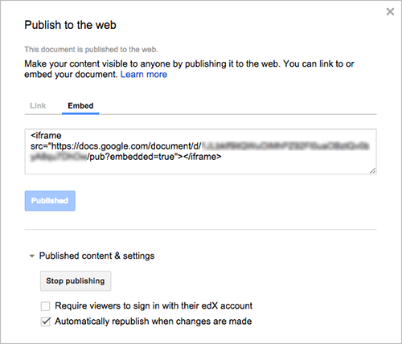

6.14. 谷歌云文件工具¶
这章讲如何在你的课程中嵌入谷歌云文件，比如文档，幻灯片，和图片。更多信息，请往下看：
你也可以使用:ref:谷歌日历<谷歌日历工具>`在你的课件中.更多相关信息，请看:ref:`Google Calendar Tool.
Note
谷歌的服务在一些国家和地区不可用。如果谷歌的服务在学习者所在的区域内不可用，这个学习者可能会在谷歌云文件或日历所在的地方看到“image unavailable”的提示.我们强烈建议在这些地方为学习者提供可替代的资源.
6.14.1. 概述¶
你可以在你的课程中嵌入谷歌云文件以便你的学生在你的课件中可以看到这个文件.比如，你可以共享一个谷歌幻灯片给你的学生。

你可以嵌入以下几种类型的谷歌云文件:
- Google Docs (文本文档)
- Google Drawings (图像)
- Google Forms (表格和调查)
- Google Slides (演示文稿)
- Google Sheets (电子表格)
6.14.2. 在你的课程中嵌入谷歌云文件¶
在你的课程中嵌入谷歌云文件 has three steps:
- 在e你的课程中启用谷歌云文件 by using Studio or OLX.
- 获取谷歌云文件的嵌入代码.
- Add the Google Drive file to your course by using Studio or OLX.
6.14.2.1. 在你的课程中启用谷歌云文件¶
要在课件中添加一个谷歌云文件,你需要创建一个在Studio中创建一个高级组件或者在OLX中创建一个谷歌日历XBlock.
6.14.2.1.1. 通过edX Studio启用谷歌云文件¶
To 在e你的课程中启用谷歌云文件:
从**Settings* 菜单, 选择**Advanced Settings**.
在**Advanced Module List**区域,将你的光标放入,然后输入``”google-document”
.如果你在这个区域内看到了其他值,在最后的值后面添加一个逗号，然后在填入“google-document”``. 例如:
At the bottom of the page, select Save Changes.
6.14.2.1.2. 在edX Studio中启用谷歌云文件¶
要在你的课程中启用谷歌云文件, 你先编辑定义你的课程结构的XML文件. 你找到 课程 元素的 高级模板 属性, 然后添加字符 ``google-document``到里面.
比如, 下面的XML代码就是在你的课程里面嵌入谷歌云文件.也可以通过它嵌入其他的谷歌日历.
<course advanced_modules="["google-document",
"google-calendar"]" display_name="Sample Course"
start="2014-01-01T00:00:00Z">
...
</course>
更多相关信息,请查看 The Courseware Structure.
6.14.2.2. 使你的谷歌云文件公开并获得它的ID¶
在你添加你的谷歌云文件到你的课程中之前，你必须使你的谷歌云文件公开并且获得它的ID.
这一节中描述的任务依赖第三方软件的使用。由于软件版本的改变,这里提供的步骤的目的是引导,而不是一个确切的过程。
打开谷歌云文件.
通过**ile**菜单, 选择**Publish to the web**.
点击**Publish**, 然后选择**OK**确认这一步.
点击**Embed** 标签.
复制完整的字符到**Embed**区域里, 包含``<iframe>``标签.
Note
谷歌图像没有``<iframe>``标签.要嵌入一个图像,你需要完整复制``img``标签.
您使用这个字符串来配置谷歌云文件组件.
6.14.2.3. 在你的课程中添加谷歌云文件¶
要在课件中添加一个谷歌云文件,你需要创建一个在Studio中创建一个高级组件或者在OLX中创建一个谷歌日历XBlock.
To add a Google Drive file in the courseware, you create an advanced component in Studio or create a Google Document Xblock in OLX.
6.14.2.3.1. 通过edX Studio添加谷歌云文件¶
在你添加谷歌这个组件之前请确保:ref:在你的课程中能够添加谷歌云文件<通过edX Studio能添加谷歌云文件>.
要添加谷歌云文件组件:
在**Course Outline**页面, 打开你想要添加谷歌日历组件的单元.
在**Add New Component**下面，点击**Advanced**,然后选择**Google Document**.
这个新组件就是把默认的谷歌云文件嵌入到单元里.
在这个新组件里面，点击**Edit**.
在**Display Name**区域里,输入这个组件的名字.
In the Embed Code field, paste the embed code you copied in the 获取谷歌云文件的嵌入代码 task.
点击**Save**.
你可以点击:ref:课程内容预览 看看学生看到的单元里的谷歌云文件是怎么的.
6.14.2.3.2. 通过OLX添加谷歌云文件XBblok¶
要通过OLX添加谷歌日历XBlock，并创建``google-document``元素.你可以在``vertical`` 中嵌入这个元素, 或者你也可以在它自己的文件的垂直引用中嵌入这个元素.更多相关信息请查看`The Courseware Structure`_.
示例:
<google-document url_name="c5804436419148f68e2ee44abd396b12"
embed_code="<iframe
frameborder="0" src="https://docs.google.com/spreadsheet/pub
?key=0AuZ_5O2JZpH5dGVUVDNGUE05aTFNcEl2Z0ZuTUNmWUE&output=html&widge
t=true"></iframe>" display_name="Google Document"/>
``embed_code``的值是你在 获取谷歌云文件的嵌入代码 复制的ID.
Note
edX学习管理系统可以设置谷歌云文件高和宽. 如果你添加了这些属性,LMS会重载你的改变.
6.14.3. 编辑谷歌云文件¶
当你对你嵌入在你的课程中的谷歌云文件作出改变时,学生可以马上看到这些改变。在你更改云文件与谷歌的用户界面后，你不需要在编辑谷歌云文件组件。